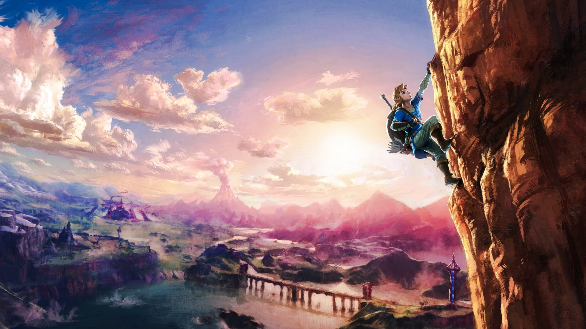
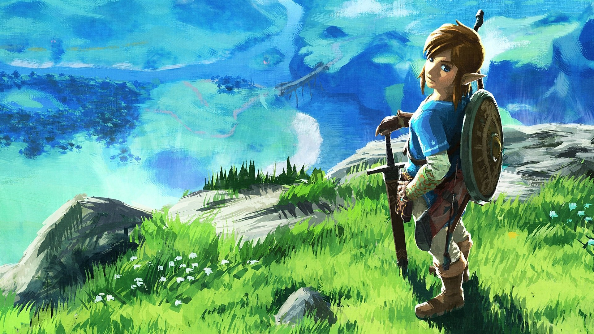
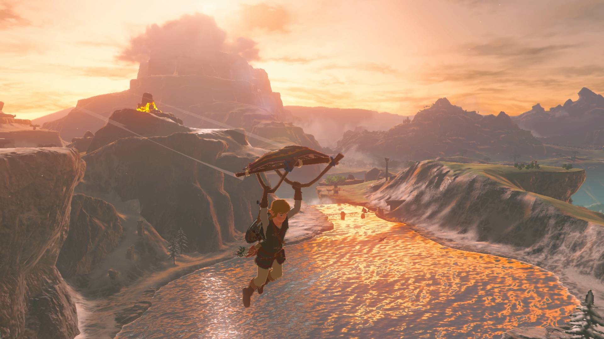

The Legend of Zelda: Breath of the Wild
Descubra um mundo de aventuras
Esqueça tudo que você sabia sobre os jogos The Legend of Zelda. Entre em um mundo de descoberta, exploração e aventura em The Legend of Zelda: Breath of the Wild, um novo jogo desta aclamada série que está quebrando barreiras. Explore vastos campos, florestas e topos de montanhas enquanto descobre como ficou o reino de Hyrule nesta impressionante aventura a céu aberto. Agora, no Nintendo Switch, a sua aventura é mais livre e mais aberta do que nunca. Leve o seu console para qualquer lugar e aventure-se como Link da forma que você quiser.
Sozinho no mundo
De início, tanta diversidade e profundidade não são claras para o jogador. Você é Link, o herói silencioso, e o game faz questão de que você sinta e entenda as coisas como se fosse ele. A história começa com um renascimento, um despertar de um longo sono de 100 anos, sem roupas, armas, memória ou propósito. Não há indicação do que fazer, para onde ir, com quem falar, além de frases enigmáticas que soam mais como alucinações do que instruções. Estamos por nossa conta e só nos resta seguir. Para onde mesmo?
Um mundo melhor
Em suas primeiras horas, Breath of the Wild reproduz de modo brilhante a noção da solidão, de ser arremessado forçadamente a um mundo novo que não nos pertence. Link não sabe o porquê de estar ali, nem qual é seu propósito no universo, então tudo parece um tipo de aprendizado. São mais questões do que conclusões, que levam a uma sensação frequente de ignorância, como se a verdade nos fosse proibida. O que devemos fazer em Hyrule? Por que não há nenhum habitante ocupando os gramados, nenhuma cidade parece habitada? O que são todas essas ruínas? E esses porcos selvagens, por que me atacam? Qual é o real tamanho desse mundo? Aliás, uma das grandes emoções de toda experiência se dá logo quando escalamos a primeira torre e percebemos que o mapa de Hyrule é muito, muito maior do que parecia de início.
As respostas vão surgindo na marra, na base da tentativa e erro, na sorte e insistência. Qualquer objeto pode funcionar como arma ou ser útil em algum momento: uma pedra, um galho de árvore, um braço de esqueleto. Uma maçã pendurada na árvore pode ser coletada para recarregar as energias (e cozida, misturada a outras frutas e alimentos na panela). Uma tocha conduz o fogo e acende um feixe de madeira cujo calor serve de abrigo pela noite. Um sapo ou um inseto voador podem ser agarrados e guardados (e depois utilizados como ingredientes de poções com efeitos mágicos). É como crescer e aprender as coisas da vida – só que aqui não há família, escola, professores e amigos. Link está sozinho, e o jogador também, ambos imersos em uma maravilhosa experiência de isolamento e descoberta.
O fim é o começo
A grandiosidade geográfica e estética de Hyrule soa como um pré-requisito mínimo se comparada a vários RPGs recentes, de Skyrim a The Witcher III. Mas o modo como Breath of the Wild explora esse tamanho avantajado é elegante, para não dizer primoroso. Do ponto de vista artístico, temos a sensação de percorrer uma tela em branco que se desenrola como um desenho animado a ser esboçado com novas paletas de cores e texturas. Link percorre centenas de quilômetros por todo tipo de clima e terreno -- de montanhas nevadas a desertos de areia, de mares de lava a praias paradisíacas, de gramados abertos a florestas fechadas --, sempre separados por enormes distâncias.
Usando uma analogia, encarar este Zelda tão moderno e ambicioso foi como investir energia e expectativa em um novo filme Star Wars. A carga nostálgica é pesada e faz parte da experiência -- de alguma maneira, queremos que a releitura funcione, queremos ser contemplados por tantos anos de espera e dedicação de fã. E ainda comparando mídias, fica clara aqui a beleza da realização de Breath of the Wild frente ao que é feito no cinema, por exemplo. Nas telonas, histórias antigas podem evoluir com classe, graças a roteiros atualizados aos tempos atuais e ao retorno de caras conhecidas do elenco (além de um bocado de efeitos especiais). Já os games dependem menos de boas histórias e um tanto mais da tecnologia, mas, principalmente, da genialidade das pessoas que os criam. Zelda evoluiu bem, mas não só porque é uma franquia de 30 anos amada por milhões de pessoas. Breath of the Wild poderia ter sido um fracasso de execução, e consequentemente, de público e crítica. Felizmente para a indústria dos videogames (e para a Nintendo), não foi esse o caso.
Breath of the Wild acerta em muitos quesitos explorados por outros games semelhantes, o que nem vale detalhar aqui, uma vez que o jogo não se propõe (nem se limita) a ser uma versão aprimorada de outros mundos abertos. Mas o que é diferente da maioria, e que me chamou a atenção, é como o game não subestima a inteligência do jogador. Há uma confiança mútua de que saberemos fazer o que precisa ser feito, mesmo que tome tempo e muitas tentativas frustradas. Breath of the Wild premia pela insistência e também valoriza (muito de leve) a sagacidade de quem segura o joystick. Dá pistas, mas não entrega nada de mão beijada. Desvendar cada desafio representa uma pequena vitória, que vão se acumulando e nos fazem desejar mais desafios.
Screenshots de The Legend of Zelda: Breath of the Wild

The Legend of Zelda: Breath of the Wild já está disponível para Nintendo Switch.